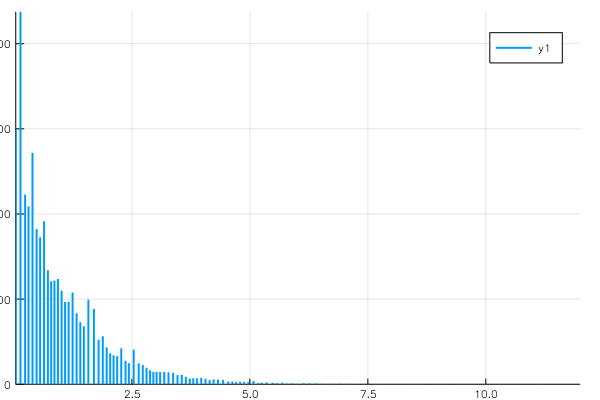

Data Surrogates
Some OnlineStats are especially useful for out-of-core computations. After they've been fit, they act as a data stand-in to get summaries, quantiles, regressions, etc, without the need to revisit the entire dataset again.
Linear Regressions
The LinRegBuilder type allows you to fit any linear regression model where y can be any variable and the x's can be any subset of variables.
# make some data
x = randn(10^6, 10)
y = x * linspace(-1, 1, 10) + randn(10^6)
o = fit!(LinRegBuilder(11), [x y])
# adds intercept term by default as last coefficient
coef(o; y = 11, verbose = true)Info: Regress 11 on [1, 2, 3, 4, 5, 6, 7, 8, 9, 10] with bias
11-element Array{Float64,1}:
-0.999761
-0.777846
-0.555731
-0.33458
-0.108652
0.11223
0.332653
0.553821
0.776638
0.999295
0.000142742Histograms
The Hist type for online histograms uses a different algorithm based on whether the argument to the constructor is the number of bins or the bin edges. Hist can be used to calculate approximate summary statistics, without the need to revisit the actual data.
o = Hist(20) # adaptively find bins
o2 = Hist(0:.5:5) # specify the bin edges
s = Series(o, o2)
fit!(s, randexp(100_000))
quantile(o, .5)
quantile(o, [.2, .8])
mean(o)
var(o)
std(o)
using Plots
plot(s)
savefig("hist.png"); nothing # hide